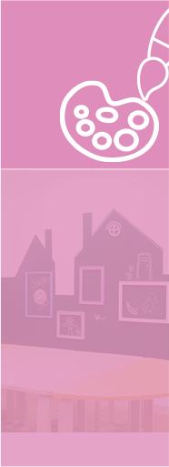
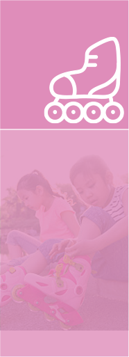

放学后，安蒙还设置了丰富的兴趣班供对课程感兴趣的孩子们或来不及接孩子的家庭选修。兴趣班均为：45分钟/节，设置有：围棋、烹饪、创意美术、轮滑、篮球、戏剧表演等。
围 棋
围棋最佳的入门时间是4-6岁，这个时期孩子的大脑处于高速发育中，好动也好学，非常适合学习围棋开发智力。
烹 饪
烹饪课程既能增加孩子的动手能力，满足孩子对食物制作过程的好奇心，又能增加孩子对饮食的兴趣，而让孩子们自己动手制作饼干、小食的烘焙课程，更是让孩子们乐在其中！同时也为长大后独立生活奠定良好的基础。
创意美术
通过让孩子尝试各种不同的艺术工具及其用法，催化孩子们的想象力与创造力。 另外学校定期在校园内举办画展，进而陶冶孩子艺术情操，提升其审美及对事物的观察角度。
篮 球
学习篮球对促进生长发育很有好处，一般而言，在相同条件下，长期打篮球的孩子比不打篮球的孩子高8公分。
轮 滑
4-6岁是轮滑启蒙的适龄期。幼年时期开始学习，可以在孩子们喜爱的各种轮滑游戏中，自由、无意识地掌握轮滑的技巧。
戏剧表演
戏剧是与人类生活、历史和人性最为靠近的艺术，包含着丰富的人文知识，蕴涵着深刻的人文精神。戏剧教育通过美的形式引导学生热爱真善美，学习与他人和谐相处，养成良好的性格和健全的人格。